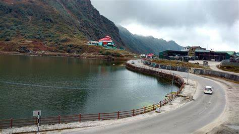

A serene glacial lake nestled amidst the Himalayas
Tsomgo Lake, also known as Changu Lake, is a breathtaking high-altitude glacial lake located in the East Sikkim district of Sikkim, India. Situated at an altitude of 12,313 feet, the lake is surrounded by majestic snow-capped mountains, making it a popular tourist destination for nature lovers and adventure enthusiasts.
According to local beliefs, Tsomgo Lake holds great significance in Buddhist and Hindu traditions. The lake is revered as a sacred site by the local Sikkimese people, who often visit it to offer prayers and seek blessings. It is also believed to have therapeutic properties.
Visitors to Tsomgo Lake can enjoy breathtaking views of the surrounding Himalayan landscape, indulge in activities like yak rides and snowboarding (in winter), and savor traditional Sikkimese snacks like momos and thukpa at the nearby stalls. The lake remains frozen during the winter months, adding to its ethereal beauty.
Efforts have been made to preserve the pristine beauty and ecological balance of Tsomgo Lake. Conservation initiatives focus on minimizing human impact, preventing pollution, and promoting responsible tourism practices to ensure that future generations can continue to enjoy this natural wonder.
Tsomgo Lake serves as a gateway to other nearby attractions in Sikkim, such as Nathula Pass, Baba Harbhajan Singh Temple, and the quaint village of Gangtok. Visitors can embark on scenic drives, trekking expeditions, and cultural tours to explore the rich heritage of the region.